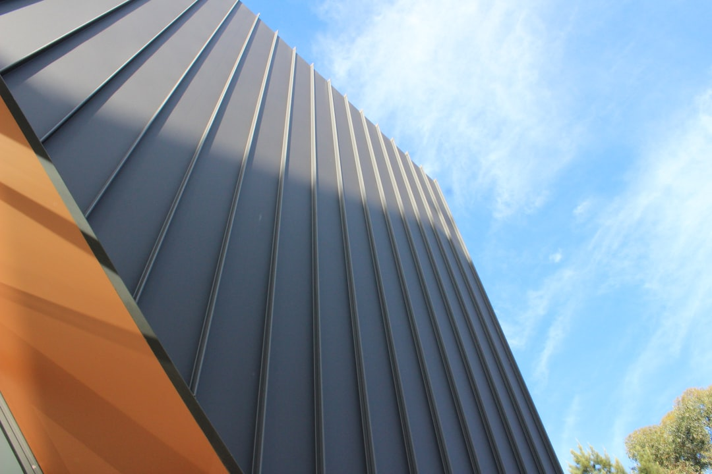

For homeowners and property managers comparing waterproofing services adelaide options, the useful starting point is the affected surface, the building type and the evidence of water movement.
Waterproofing Services Adelaide Explained
Pro Waterproofing Adelaide describes work across leaking showers, balconies, basements and roof decks. That range is useful because each enquiry starts with a different investigation. A shower enquiry may involve diagnosis, membrane reinstatement or resealing, while a basement or retaining wall enquiry may involve below ground tanking, sump systems or hydrostatic pressure control.
The brief should name the room or structure, the surface finish, any recent renovation work, and whether the concern is active leaking, moisture tracing or planned replacement. The published process starts with project details, followed by inspection, written quote and work beginning.
For leak detection, the listed work includes moisture tracing, invasive investigation and targeted leak repair. If the water path is uncertain, the inspection may need to answer that question before the repair method is chosen.
Where The Property Type Changes The Brief
The published service list separates residential, commercial, strata and managed property work. A home renovation can usually be framed around the wet area or external surface being upgraded. A strata or managed property brief may need clearer boundaries between private lots, shared balconies, podium decks, roof terraces and basement car parks before anyone agrees the scope.
Adelaide context is useful when it explains the building condition. The published location notes refer to renovated wet areas in older Adelaide CBD stock, original tile beds in Norwood, older bathroom retrofits in Prospect, and original wet areas in North Adelaide. Those examples point to careful investigation before assuming the existing substrate or membrane can be reused.
For a broader comparison of trade selection, this related guide to waterproofing contractors in Adelaide can sit beside this service checklist.
Quote Details That Reduce Ambiguity
A written quote is only useful when it names the area, the proposed repair or membrane approach, preparation assumptions, access limits and warranty terms. The published details state that customers receive a clear, itemised quote and scope before work begins, with full membrane installations backed by a written workmanship warranty from the contractor.
Useful questions for a site inspection include:
- Which area is being waterproofed, repaired or investigated?
- Is the work diagnosis, membrane installation, membrane repair, replacement or resealing?
- Will the quote state the scope, price and warranty terms in writing?
- For domestic wet areas, how will the job align with AS 3740?
- For basements, retaining walls or roof decks, what access and surface preparation assumptions are included?
These questions do not replace a contractor assessment. They make the inspection easier to compare once the written scope arrives.
Who This Applies To
This guide is most relevant to Adelaide homeowners, renovators, strata contacts and property managers who need waterproofing work defined before they commit to a contractor. It fits enquiries for bathrooms, laundries, WC areas, leaking showers, tiled or concrete balconies, flat roof membranes, rooftop terraces, basement areas, retaining walls and external exposed building surfaces.
It is less useful for readers looking for a fixed price without an inspection, because the published process frames the job around project details, site assessment and a written quote. The same caution applies when the leak source is unclear. A moisture investigation can change the repair path, especially where the visible stain or damp area is not the original entry point.
How To Compare Service Options
Read the service list as a decision path. Internal wet areas point to bathroom, shower, laundry or WC waterproofing. Outdoor living surfaces point to balcony, roof deck or external waterproofing. Below ground or soil facing structures point toward basement or retaining wall waterproofing. Commercial, strata and managed properties add coordination questions about access, shared responsibility and documented scope.
Membrane work also needs careful wording. The published services list membrane selection, installation, repair and replacement as distinct tasks. A useful enquiry should therefore ask whether the contractor expects a new membrane, a repair to an existing system, or a targeted leak repair after investigation.
Local setting can shape the inspection brief where the published details support it. Glenelg is described in relation to salt laden air and UV affecting balconies, terraces and roof decks. Henley Beach is described in relation to salt, wind and UV, with tiled balconies and outdoor showers named as common failure points. Magill, Burnside and Campbelltown examples point to foothills, sloping sites, underground spaces or retaining wall needs.
- Describe the area. Name the room, structure or surface and whether the issue is leaking, moisture, renovation or planned replacement.
- Arrange inspection. Use the inspection to let a licensed contractor assess the area and identify the likely leak source.
- Read the written quote. Check that the scope, price and warranty terms are stated before work begins.
- Match the standard. For domestic wet areas, ask how the proposed work will align with AS 3740.
| Situation | Published service fit | Quote focus |
|---|---|---|
| Renovating a bathroom, laundry or WC | Bathroom waterproofing to AS 3740 | Scope, surface preparation and written warranty terms |
| Leaking shower | Shower diagnosis, membrane reinstatement and resealing | Leak source, repair method and affected surfaces |
| Balcony or terrace issue | Balcony or roof deck membrane repair or replacement | Surface type, exposure and access assumptions |
| Below ground moisture concern | Basement or retaining wall waterproofing | Tanking, sump or pressure control options |
| Managed property work | Commercial, strata or managed property waterproofing | Responsibility boundaries and written scope |
This guide covers Adelaide waterproofing service selection, quote checks and project briefing using the supplied published details.